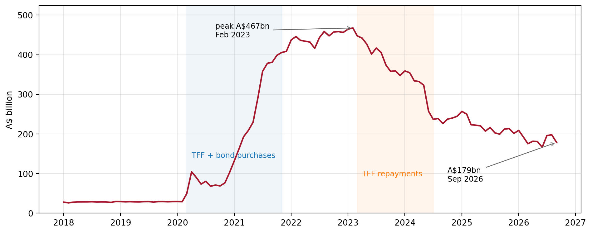
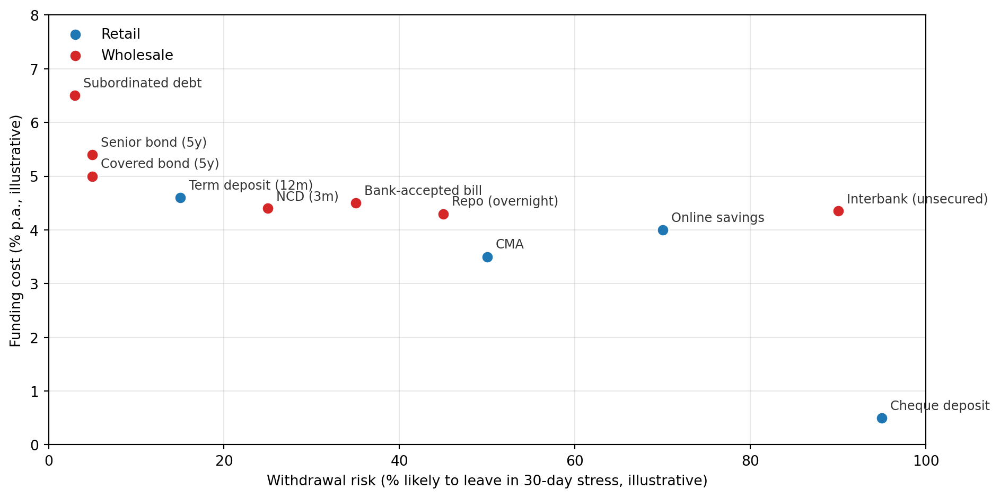

flowchart LR
C[Customer<br/>at Bank A] -->|pays A\$1,000| M[Merchant<br/>at Bank B]
A[Bank A<br/>deposit -1,000] -->|ES balance -1,000| RBA[(RBA<br/>settlement)]
RBA -->|ES balance +1,000| B[Bank B<br/>deposit +1,000]
style RBA fill:#A6192E,color:#fff
AFIN8003 Week 9 - Liability and Liquidity Management
Banking and Financial Intermediation
AFIN8003
2026S2
Liability and Liquidity Management
Cold open: 14 September 2007
ImportantNewcastle, Friday morning
Customers queued around the block outside Northern Rock branches. The first run on a British bank since Overend, Gurney & Co. in 1866, a gap of 141 years.
The mortgage book was performing. What failed was the funding mix:
- ~75% of funding came from wholesale markets: securitisation, interbank lines, mortgage-backed securities.
- ~25% from retail deposits.
When the ABCP market seized in August 2007, the bank could not roll its debt. The Bank of England announced emergency liquidity on the evening of 13 September, the news leaked, and the queues formed the next morning.
Roadmap
A bank’s liability mix is a liquidity-risk decision. Week 8 asked what liquidity risk is; this week is the toolkit for managing it.
- Asset-side toolkit: what counts as a liquid asset, and what it costs to hold.
- Reserves: the top of the liquidity hierarchy, and the RBA that controls their supply and price.
- Liability-side toolkit: the deposit and wholesale ladder.
- The economics of a deposit: implicit and explicit interest.
- Other FIs and the 2025 regulatory update.
Throughout, every choice trades off cost against withdrawal risk. There is no free liquidity.
Recap: two ways to plug a drain
Week 8 did this on a balance sheet. Carrying it forward:
| Stored | Purchased | |
|---|---|---|
| Action | Sell or pledge liquid assets held | Borrow new funds wholesale |
| Cost | Yield foregone | Spread above the cash rate |
| Stress risk | Fire-sale prices | Lenders vanish, cannot roll |
| Balance sheet | Shrinks | Same size, new liability |
| Leaned on by | Smaller banks | Larger banks, and Northern Rock too far |
The mix is the strategy. Choosing it is the rest of this lecture.
Asset-side toolkit
Liquidity, by example
How fast can this become cash, and at what discount?
| Asset | Sell A$500m by | Discount |
|---|---|---|
| Reserves at the RBA | instantly | none, it is cash |
| 10-year Commonwealth bond | this afternoon | near screen price |
| Investment-grade corporate bond | a few days | a point or two |
| One residential mortgage | never | there is no market |
Liquidity is not a property of the asset. It is a property of the market the asset trades in, and it is worth least on the day you need it most.
The cost of holding liquidity
Every dollar of liquid assets is a dollar not lent.
| Yield | |
|---|---|
| Mortgage | 6% |
| Commonwealth bond | 4% |
| Cost of holding the bond instead | ~2% p.a. |
On a A$20bn buffer that is roughly A$400m a year of forgone margin.
Banks do not hold “lots of liquidity to be safe”. They hold the least the regulator and their own risk appetite allow, which is exactly why the LCR is a minimum.
Reserves and the RBA
Reserves: the top of the hierarchy
Level 1 HQLA opens with cash and central bank reserves.
- Already cash. No sale, no haircut, no market required.
- Quantity set by policy, not markets. Banks trade reserves all day; the aggregate never moves. Only the RBA moves it.
So the RBA sets three things a treasurer cannot:
| How much liquidity exists | A$28bn, then A$468bn, now heading to A$70–100bn |
| What it costs | The corridor around the cash rate |
| What counts as liquid | The CLF: invented 2015, abolished 2023 |
Your liquidity position is not entirely yours to manage.
The Exchange Settlement Account
One account per bank at the RBA. Its balance is the bank’s ES balance; in aggregate, the system’s reserves.
A customer of Bank A pays a merchant banked at Bank B:
The deposit moves between banks; the reserves move with it. Bank A must find A$1,000 of ES balance to settle, which is the mechanical reason a deposit outflow is a liquidity event.
Reserves earn the cash rate target less 10 bp, the floor under every funding rate in this lecture.
The cash market
Where banks lend and borrow ES balances, overnight.
- Price: the cash rate.
- Quantity: total ES balances at the RBA.
The cash rate target is the RBA’s headline policy rate. Mortgage, business and deposit rates all anchor to it.
The Board sets the target. Supply and demand set the actual rate. Closing that gap is the rest of this section.
Repos: the RBA’s supply lever
A repurchase agreement is a sale today plus an agreement to buy back tomorrow.
- Bank A sells a bond to the RBA for $100 today.
- Bank A buys it back for $100.012 tomorrow.
Bank A has borrowed $100 overnight against collateral. Cost \(0.012/100 = 0.012\%\) a day, or \(\approx 4.4\%\) annualised, near the 4.35% target.
ImportantThis is the supply lever
The RBA cannot vote reserves into existence. It creates them by buying securities under repo, and drains them when those repos mature.
Every reserves figure in the next three slides moves through this one instrument.
Repos dominate short-term funding generally, because collateral makes them cheaper than unsecured lending.
Before March 2020: scarce reserves
Aggregate ES balances sat at about A$28 billion and barely moved for years.
- Most of that was tied up meeting daily settlement needs.
- The surplus the RBA actually managed was only A$2 to 3 billion.
- It adjusted that margin every day through repos. A few hundred million moved the cash rate.
A tiny surplus, actively rationed. That is what scarce reserves means, and it is why small daily operations could steer the price.
ES balances, live from the RBA
import io
import urllib.request
import pandas as pd
import matplotlib.pyplot as plt
URL = "https://www.rba.gov.au/statistics/tables/csv/a1-data.csv"
raw = urllib.request.urlopen(URL, timeout=60).read().decode("utf-8-sig")
df = pd.read_csv(io.StringIO(raw), skiprows=10) # row 10 holds the series IDs
df = df.rename(columns={df.columns[0]: "date"})
df["date"] = pd.to_datetime(df["date"], format="%d-%b-%Y", errors="coerce")
es = (df.dropna(subset=["date"])
.assign(bn=lambda d: pd.to_numeric(d["ARBALESBW"], errors="coerce") / 1000)
.dropna(subset=["bn"])
.set_index("date")["bn"]
.loc["2018":]
.resample("MS").mean())
peak_d, peak_v = es.idxmax(), es.max()
last_d, last_v = es.index[-1], es.iloc[-1]
fig, ax = plt.subplots(figsize=(10, 4.0))
ax.plot(es.index, es.values, color="#A6192E", linewidth=1.8)
ax.axvspan(pd.Timestamp("2020-03-01"), pd.Timestamp("2021-11-01"),
alpha=0.07, color="tab:blue")
ax.axvspan(pd.Timestamp("2023-03-01"), pd.Timestamp("2024-07-01"),
alpha=0.07, color="tab:orange")
ax.annotate("TFF + bond purchases", xy=(pd.Timestamp("2020-04-01"), peak_v * 0.30),
fontsize=9, color="tab:blue")
ax.annotate("TFF repayments", xy=(pd.Timestamp("2023-04-01"), peak_v * 0.20),
fontsize=9, color="tab:orange")
ax.annotate(f"peak A${peak_v:,.0f}bn\n{peak_d:%b %Y}", xy=(peak_d, peak_v),
xytext=(pd.Timestamp("2020-09-01"), peak_v * 0.95), fontsize=9,
arrowprops=dict(arrowstyle="->", color="#666", lw=0.9))
ax.annotate(f"A${last_v:,.0f}bn\n{last_d:%b %Y}", xy=(last_d, last_v),
xytext=(last_d - pd.Timedelta(days=700), last_v * 0.45), fontsize=9,
arrowprops=dict(arrowstyle="->", color="#666", lw=0.9))
ax.set_ylabel("A$ billion")
ax.set_ylim(0, peak_v * 1.12)
ax.grid(True, alpha=0.3)
plt.tight_layout()
plt.show()
Pre-COVID it sat near A$28bn for years. Everything after March 2020 is the TFF and the bond purchase program arriving, then leaving.
Ample reserves
Announced April 2024:
- Weekly full-allotment repo auction.
- Banks bid for what they want. Every bid filled.
- Price: target plus 10 bp (raised from 5 in April 2025).
The RBA no longer sets the quantity. Banks do. The RBA sets the price.
WarningNot there yet
Reserves are still falling as pandemic assets mature: A$170bn in September 2026. Banks now expect the system to settle at A$70–100bn, down from the A$100–200bn expected in 2024.
RBA, August 2026: “it could be some years away.”
NoteOpen repo retires in early 2027
Announced 25 August 2026. Use had fallen below A$5 billion: banks now take what they need from the full-allotment OMO.
Two facilities that disappeared
NoteTerm Funding Facility (TFF), 2020 to 2024
COVID-19 crisis tool. Banks could borrow up to 3 years at the cash rate target.
- Drawdown window closed 30 June 2021.
- Banks drew $188 billion at the peak, about 6% of all credit outstanding.
- All TFF funding fully matured by 30 June 2024.
WarningCommitted Liquidity Facility (CLF), 2015 to 2023
A uniquely Australian fix. Basel III’s LCR requires HQLA. The Australian Government simply doesn’t issue enough debt for ADIs to hold sufficient Level 1 securities. The CLF was a paid line of credit from the RBA that counted as HQLA.
The post-COVID surge in Commonwealth bond issuance solved the underlying problem. APRA reduced the aggregate CLF from $140bn (Sep 2021) to zero on 1 January 2023.
Liability-side toolkit
The cost vs. withdrawal-risk frontier
The goal of liability management:
Construct a portfolio of liabilities that is low cost and has low withdrawal risk.
The problem:
- Cheap funding tends to be flighty (demand deposits).
- Sticky funding tends to be expensive (term deposits, long bonds).
There is no free quadrant. Northern Rock learned this the hard way.

Cheap and sticky doesn’t exist. Banks pick a point on the frontier.
Build a funding mix
Shares normalise to 100%: the mix matters, not the levels.
Northern Rock sat near 75% wholesale. Drag there and read both numbers.
NoteTwo things to try
- All cheque deposits. Cost collapses, withdrawal risk maxes out. Funded entirely by money that can leave tomorrow.
- All term and bonds. Withdrawal risk near zero, cost the highest on the board, paid every year whether or not a run comes.
Neither corner is a business.
Deposit liabilities
We walk the ladder in three groups: deposits, then wholesale, then everything else.
Demand deposits
The cheque account, the everyday transaction account.
- Withdrawal risk: very high. Payable on demand, no notice.
- Cost (explicit interest): very low or zero.
- Used by households and businesses for transactions.
Why are these so cheap for the bank? And are they really as cheap as they look?
The Regulation Q backstory
US demand deposits paid zero interest from 1933 to 2011.
NoteRegulation Q (1933 Banking Act)
Regulators blamed deposit competition for pre-1933 risk-taking, and banned interest on demand deposits outright. It lasted 78 years, until Dodd-Frank s.627 repealed it on 21 July 2011.
Banks may now pay. Most still don’t.
Australia never had the ban. Hence an Australian online saver at 4–5% in 2026 against a US checking account at ~0.01%.
Demand deposits aren’t really free
Even when explicit interest is zero, the deposit costs the bank real money:
- Branch staff, ATMs, online banking, fraud monitoring, 24/7 call centres.
- Cheque clearing.
- Card scheme fees.
Competition forces banks to partially absorb these costs and offer subsidised services. The depositor receives implicit interest: interest paid in services rather than cash.
The implicit interest rate
Define the implicit interest rate (IIR) on a demand-deposit account as
\[\text{IIR} = \dfrac{C - F}{B}\]
where, per account per year, \(C\) is the bank’s management cost, \(F\) the fees it earns, and \(B\) the average balance.
If \(C > F\) the bank is subsidising the depositor and implicit interest is positive. If \(C < F\) it is taxing them, and implicit interest is negative.
Move \(C\), \(F\), and \(B\). The IIR updates live.
The textbook example: \(C=\$150\), \(F=\$100\), \(B=\$1{,}200\). IIR ≈ 4.17%. The depositor “earns” 4.17% per year in subsidised services, even though the cash interest rate on the account is zero.
Gross interest = explicit + implicit
If the account also pays explicit interest above a minimum balance, the depositor’s total return is
\[G = \underbrace{r \cdot B \cdot \mathbb{1}\{B \ge M\}}_{\text{explicit}} \;+\; \underbrace{(c - f) \cdot n \cdot 12}_{\text{implicit}}\]
with \(r\) the explicit rate, \(B\) the average balance, \(M\) the threshold to earn it, \(c\) the bank’s unit cost per transaction, \(f\) the fee per transaction and \(n\) transactions per month.
The indicator is 1 when the balance clears the threshold and 0 otherwise.
Two things to try:
- Drop \(B\) below \(M\) and explicit interest collapses to zero.
- Drop \(f\) below \(c\) and implicit interest goes positive.
Savings accounts and CMAs
Two close cousins of the demand deposit, both with lower withdrawal risk.
Savings account
- Restrictions: limited monthly withdrawals, sometimes a notice period.
- Held for accumulation, not transactions.
- Pays explicit interest.
- Lower withdrawal risk than a cheque account.
Cash management account (CMA)
- High minimum balance (typically A$10,000+).
- Funds available on call; supports cheques, debit cards, transfers.
- Modest implicit interest, mitigated by transaction fees.
- Aimed at investors and treasurers parking cash between trades.
Term deposits, retail and wholesale
Term deposit (retail)
Fixed maturity, fixed rate, early withdrawal penalty.
- Withdrawal risk: very low. The penalty is the discipline.
- Cost: high, a locked-in maturity premium.
Negotiable CD (wholesale)
Face value typically above ~A$100,000, days to years.
- Withdrawal risk: low. The holder sells rather than redeems.
- Cost: moderate, market-driven.
Negotiable is the whole point: the holder’s liquidity comes from the secondary market, not from the bank.
Non-deposit (wholesale) liabilities
Interbank funds
Short-term unsecured loans between banks, usually overnight.
- The price is the cash rate.
- Withdrawal risk for the borrowing bank: very high. The lender can refuse to roll over the next day.
- Cost: low to moderate, close to the cash rate.
This is the cheapest unsecured funding a bank can get. It’s also the first to disappear in a crisis.
Repurchase agreements (repos)
We met repos earlier as an RBA tool. Banks also use them with each other.
- The transaction is collateralised by securities.
- Cheaper than unsecured interbank lending, because the lender bears almost no credit risk.
- Highly flexible: overnight, term, or open-ended.
NoteWhy secured beats unsecured
The repo lender holds your collateral. If you default, they sell it. So they don’t need to charge a credit risk premium.
In stress, secured markets often stay open while unsecured markets close. This is why every bank treasurer has a stack of repo-eligible collateral ready to go.
Bank-accepted bills and commercial paper
Two short-dated wholesale instruments.
Bank-accepted bill (BAB)
- A short-term bill of exchange that a bank guarantees (“accepts”).
- Sold to investors at a discount.
- Once the benchmark for the Australian short-rate (BBSW).
- Largely supplanted by NCDs and repos.
Commercial paper (CP)
- Short-term unsecured promissory notes.
- Issued by both banks and large corporates.
- Heavily used in U.S. money markets.
- September 2019 episode: U.S. repo rates spiked from ~2% to ~10% in a day when reserves drained. Even “deep” wholesale markets can seize.
Covered bonds
A bond issued by the bank, backed by a ring-fenced pool of assets that stays on the bank’s balance sheet.
TipWhy covered bonds are special
Bondholders have a dual claim:
- On the issuing bank, like any senior bond.
- On the cover pool (typically high-quality mortgages), if the bank fails.
Hence covered bonds are often rated AAA even when the issuer is rated AA−.
In Australia:
- Legalised by the Banking Amendment (Covered Bonds) Act 2011.
- Capped at 8% of the ADI’s domestic assets under APS 121.
- All Big 4 banks run active covered-bond programmes.
Subordinated debt and long-term borrowings
The bottom of the funding stack: long-dated, often callable, subordinated to depositors and senior creditors.
- Subordinated debt (Tier 2): counts toward regulatory capital. Expensive but stable.
- Medium-term notes (MTNs): a flexible programme for issuing bonds in various tenors and currencies.
- Senior unsecured bonds, long-term loans: the workhorse of long-term wholesale funding.
The most stable funding a bank can have, short of equity. Also the most expensive.
Other FIs and regulation
Liquidity management at non-DI FIs
The same trade-off, different instruments:
| FI type | Main funding | Distinct liquidity issue |
|---|---|---|
| Life insurer | Premiums, policy reserves | Mass policy surrenders |
| P–C insurer | Premiums, claims reserves | Catastrophe spike forces asset sales |
| Securities firm / IB | Repos, bank loans, short positions | Inventory financing during stress |
| Finance company | Commercial paper, long-term debt | CP rollover stress |
The unifying theme: short-term liabilities funding less-liquid assets, with rollover risk in the middle.
APRA’s regime, and the 2025 change
| LCR ADI | MLH ADI | |
|---|---|---|
| Who | Big 4, larger banks | Smaller ADIs |
| Test | LCR and NSFR \(\ge\) 100% | Liquid assets \(\ge\) 9% of liabilities |
Depositors: the Financial Claims Scheme covers A$250,000 per account-holder per ADI, unchanged since February 2012.
Effective 1 July 2025, after the March 2023 turmoil:
- MLH liquid assets valued at mark-to-market, not amortised cost.
- All ADIs operationally ready to request Exceptional Liquidity Assistance.
- The 9% minimum itself is unchanged.
An MLH cushion will now visibly shrink when yields rise, instead of hiding behind book value.
Wrap-up
Key takeaways
- Two sources of liquidity: stored (sell what you own) and purchased (borrow new). Banks use both.
- The cash market is a price (the cash rate) and a quantity (ES balances). The RBA’s 2024 pivot to ample reserves changes how the quantity is set.
- The CLF is gone. LCR ADIs now meet HQLA requirements with Commonwealth and semi-government bonds plus ES balances.
- Liabilities sit on a frontier between cost and withdrawal risk. There is no point that is both cheap and sticky.
- Implicit interest is real interest. A subsidised “free” account is genuinely paying you in services.
- APS 210 changes (1 July 2025) bring mark-to-market into the small-bank liquidity regime.
Suggested readings
- How RBA implements monetary policy
- RBA Exchange Settlement Account Policy
- RBA, The Future System for Monetary Policy Implementation (April 2024)
- RBA, The Committed Liquidity Facility: 2015–2022
- APRA, APS 210 Liquidity (Prudential Handbook)
- APRA, Targeted changes to ADI liquidity and capital standards (2024–2025)
- Covered bonds in Australia (RBA Bulletin)